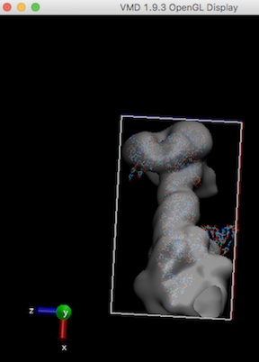
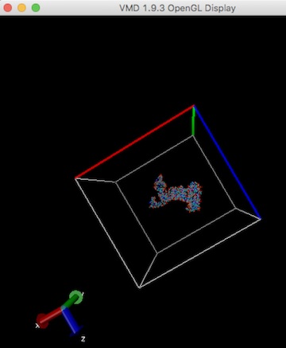

- Case 1 <A user input pdb file has reasonable structural geometry> For this case, try below possible solutions. If cryo_fit still can't find better (higher) cc, then the initial correlation between user input pdb file and cryo-EM map is already high enough. Just run phenix.real_space_refine only and deposit. Doo Nam recommends to argue/claim in a paper like "Our fit is so high, even cryo_fit did not find higher level of fit than our initial fit". This bold recommendation is based on his limited observations so far. Therefore, if you have a better cc model (from manual fit?) than cryo_fitted model, we would appreciate if you can email us (jprajapati@lanl.gov, dgirodat@lanl.gov, doonam.kim@gmail.com).
- Case 2 <A user input pdb file has unreasonable structural geometry> For this case, although the initial fit between user's atomic model and map looks good, it is a fictitious fitting without consideration of ideal atomistic model geometry. Run cryo_fit to find decent fit to the cryo-EM map that restores/maintains reasonable structural geometry based on molecular dynamics forcefield (amber03.ff).
- Provide a higher resolution map (like better than 4.5 Angstrom) tends to find higher cc since there is a more chance of finding fittable regions.
- Cryo_fit calculates the gradient of cc. If cryo_fit is provided a giant cryo-em map with a tiny atomic model, then there is a large empty space (not filled). Therefore, the constraint forces for the model are very small. Consequently, these small forces are not helpful.
2-1. Re-run cryo_fit with an atomic model that fits the majority of the map. If you fit multiple atomic models into a symmetric map or do sequential fitting into a non-symmetric map, watch Tom Goddard's lecture (2013)
2-2. Re-run cryo_fit with only a relevant map region. See 'How to extract a relevant map region?' in this FAQ.
- If the initial model is not properly aligned to a map, see 'How to improve initial cc?' in this FAQ.
- A user may enforce a stronger initial map weight (e.g. emweight_multiply_by) manually. However, since cryo_fit automatically increases emweight_multiply_by if it doesn't find higher cc anyway, manual increase in map weight may not necessarily find higher cc.
- python <User Phenix>/modules/cryo_fit/files_for_steps/9_after_cryo_fit/solve_duplicate_atoms_issue/add_all_prefix.py
- If a user is using ssh linked linux, run 'set DISPLAY' to avoid the message of "Unable to access the X Display, is $DISPLAY set properly?".
- cryo_fit which reports a map size between step 6 and step 7 with codes of
- from iotbx import ccp4_map
- ccp4_map = ccp4_map.map_reader(user_input_map)
- target_map_data = ccp4_map.map_data()
- EMAN2's e2iminfo
- For example, e2iminfo.py <user>.mrc
- (note) As of EMAN2.2, the file extension should be mrc, not ccp4
- VMD which can visualize current map size as in this FAQ.
- For example, relion_image_handler --i <user>.mrc --new_box 370 --o <user_box_size_370>.mrc
- Note that these options (phenix.dock_in_map or UCSF Chimera's 'fit in map') do rigid-body fitting only. Therefore, these are useful as global fitting before cryo_fit1. However, when overall orientation is already well fitted, often these are not that needed before cryo_fit1.

), enforcing stronger emweight_multiply_by tends to fit better (obviously).
- For example, phenix.cryo_fit <user.pdb> <user.map> emweight_multiply_by=50
- At this high emweight_multiply_by, the secondary structures may be broken (slightly or seriously) right after cryo_fit running.
- However, phenix.model_idealization which is followed by phenix.real_space_refine perfectly restored ideal secondary structures and fitted very well.
- This applies to all pdb input files (not only cryo_fitted files).
- Open pdb file
- [menu]
- Select -> Residue -> HIS
- Tools -> Structure Editing -> Rotamers -> OK
- (select the most probable rotamer each)
- File -> Save PDB
- Most likely, this means that initial cc is too low for MD simulation.
- When Doo Nam ran phenix.real_space_refine first, then run real_space_refined atomic model in cryo_fit, it was solved.
- Alternatively, improve initial cc by fitting initial atomic model into a map (see "How to improve initial cc?" in this FAQ)
- Less likely, but still a possible case is when the map weight is too high, lowering emweight_multiply_by may help.
"I edited out lipids, HEM and other hetero atoms and I verified that they are all gone. However, still my pdb file is not clean enough for gromacs_cryo_fit".
- When he tried to run cryo_fit on Ubuntu 16.0. However, the same data set (map and model) didn't cause any error on his macOS 10.13.6.
- When he tried to fit a very lowly correlated initial atomistic model to a map (therefore, he observed like step 3600 correlation coefficient: -0.000820). Therefore, he ran phenix.dock_in_map first then, provided placed_model.pdb as the input model to cryo_fit. Then, the error disappeared.
- Most likely, this means that a cryo_fit input pdb file is not yet stable enough for sensitive Gromacs MD simulation (step 8) even after cryo_fit's ample minimization step (e.g. step 4).
- When Doo Nam ran phenix.real_space_refine first, then run real_space_refined atomic model in cryo_fit, it was solved more than 2 cases.
- If initial cc is too low, improve initial cc by fitting initial atomic model into a map,
- either by following "How to improve initial cc?" in this FAQ
- or adding/copying more atoms.
- For example, when Doo Nam tried to fit a monomer into a trimer map, this error occured. However, simply adding dimer atomic models into an input pdb file and running cryo_fit again removed the error.
- Less likely, but still a possible case is when the map weight is too high, lowering emweight_multiply_by may help.
- Therefore, please improve initial cc by fitting initial atomic model into a map (see "How to improve initial cc?" in this FAQ)
- Doo Nam observed this error when starting molecule is not stabilized structurally. There are two possible solutions.
- Run phenix.real_space_refine before cryo_fit. Then, provide real_space_refined molecule into cryo_fit. Then, most problems were solved.
- When Doo Nam skipped minimization, this error occured. Since most users minimize the starting structure by default (cryo_fit default), most users do not need care about this. Besides, as of 9/18/2019, the default value of number_of_steps_for_minimization=20000 (which is a lot).
- It means that the map dimensions need to be larger. Therefore, check map size and solve a problem with VMD/EMAN2/relion like followings.
Like other MD simulations, gromacs need enough map box size to cover the atomic model to run (ziggle and wiggle). Refer Waters seems to be out of the box
For example, stuck-out red oxygen atoms outside the right edge of the box are the problem.

In order to run any MD simulation (including cryo_fit), a box should be large enough like

Make map box size larger (see "How to enlarge map box size?" in this FAQ), and run cryo_fit again. A user can check map box size by VMD. Alternatively, remove sticking out atoms if these are unnecessary, then run cryo_fit again.
For protein modeling, Doo Nam would use cryo_fit2 which is not limited by box size requirement.
- For example, phenix.cryo_fit <input.pdb> <input.ccp4> nproc=2
- When he provided a pdb file that has unspecified/deleted region of a molecule. Even when vmd assisted map box/cell dimension is larger than initial molecule space, this error appeared.
- When he provided a pdb file that has small number of residues (e.g. 5~16 amino acids). Even when vmd assisted map box/cell dimension is larger than initial molecule space, this error appeared. This error appeared regardless of the existence of CRYST1 and SCALE header.
- Run phenix.real_space_refine before cryo_fit. Then, provide real_space_refined molecule into cryo_fit. Then, most problems were solved.
- When Doo Nam skipped minimization, this error occured. Since most users minimize the starting structure by default (cryo_fit default), most users do not need care about this. Besides, as of 9/18/2019, the default value of number_of_steps_for_minimization=20000 (which is a lot).
- If starting molecule has non-standard chemical geometry that is too extreme that are not stabilized neither by phenix.real_space_refine nor by cryo_fit minimization, then a user needs to fix those non-standard geometry manually.